23 Comprensión de la diversidad: sistemática
481
CONCEPTOS CLAVE
23.1 Tradicionalmente los biólogos nombran a los organismos usando un sistema binomial (en el que cada especie tiene un nombre de género seguido por un epíteto específi co) y clasifi can a los organismos en categorías taxonómicas ordenadas en una jerarquía desde la más incluyente (dominio) hasta la menos incluyente (especie). 23.2 Con base en el conocimiento actual, las tres ramas principales del árbol de la vida son los tres dominios: Bacteria, Archaea y Eukarya. 23.3 La sistemática moderna busca reconstruir la fi logenia (historia evolutiva de un grupo de especies) con base en la ascendencia común inferida a partir de caracteres (características) compartidos, incluidas semejanzas estructurales, de desarrollo, de comportamiento y moleculares, así como a partir de evidencia fósil. 23.4 Los cladogramas (un tipo de árbol fi logenético) son diagramas de relaciones evolutivas hipotéticas; se construyen al analizar caracteres derivados compartidos.
E
l número total de especies vivas se estima entre 4 millones y 100 millones, pero sólo se han descrito alrededor de 1.8 millones. Los biólogos estiman que a la fecha han identifi cado menos de 10% de bacterias, más o menos 10% de hongos, sólo aproximadamente 2% de especies de nematodos (gusanos redondos) y menos de 20% de especies de insectos. De muchas regiones en el planeta todavía no se levanta un inventario cuidadoso, incluido el dosel del bosque, el suelo y las regiones profundas del océano. Los biólogos descubren miles de nuevas especies cada año. Por ejemplo, en 2009, investigadores describieron una iguana rosada que habita en las islas Galápagos como una especie recientemente identifi cada (vea la fotografía). El equipo de investigación realizó análisis genéticos que indican que esta iguana se separó de otras iguanas hace alrededor de cinco millones de años. La variedad de los organismos vivientes y los ecosistemas de los que son parte se conoce como diversidad biológica o biodiversidad . La totalidad de la vida sobre la Tierra representa la herencia biológica,
Iguana rosada. Con base en análisis genéticos, esta iguana rosada se identifi có como una nueva especie en 2009. La iguana habita el volcán Wolf en Isabela, una de las islas Galápagos.
AP Images
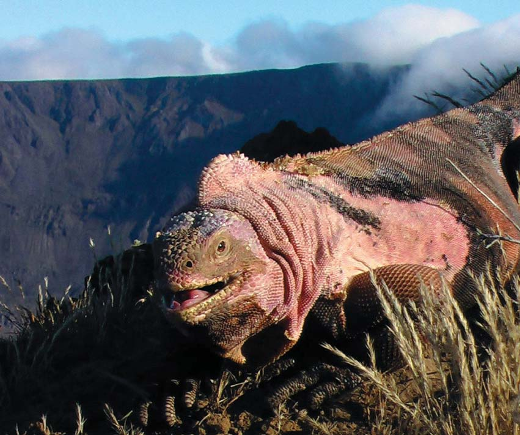
482 Capítulo 23
y la calidad de vida de todos los organismos depende de la salud y el equilibrio de esta red mundial de formas de vida. Por ejemplo, los humanos dependen de los organismos para mantener en la atmósfera la composición de gases que sostienen la vida, formar suelo, descomponer desechos, reciclar nutrientes y proporcionar alimento mutuo. Los humanos explotan muchas especies por su benefi cio económico. Un ejemplo muy antropocéntrico (centrado en los humanos) de la importancia práctica de la biodiversidad es que más de 40% de las recetas que surten los farmacéuticos en Estados Unidos se obtiene de organismos vivientes. Los investigadores recién comienzan a aprender cómo distinguir de manera efectiva los organismos que pueden ser el origen de medicamentos potenciales. Por desgracia, la actividad humana reduce seriamente la biodiversidad y las especies se extinguen más rápido de lo que los investigadores pueden estudiarlas. (Vea en el capítulo 57 la discusión acerca del declive de la biodiversidad). Alarmados por estas extinciones, los biólogos se movilizan para identifi car con mayor rapidez las nuevas especies y para conservar la biodiversidad. Muchos de ellos están de acuerdo en que describir y clasifi car todas las especies sobrevivientes del mundo debe ser una meta científi ca privilegiada en el siglo xxi. Trabajos de investigación internacionales como el Catálogo de la vida y la Enciclopedia de la vida han contribuido en gran medida hacia la realización de esta meta. El Catálogo de la vida es la obra de un equipo de investigación que colabora a nivel internacional para gestionar una amplia base de datos global que esté disponible en Internet. El Catálogo de la vida clasifi ca y presenta una lista de todas las especies conocidas del mundo. La Enciclopedia de la vida ( EOL por sus siglas en inglés), un proyecto comenzado en el 2007, es una base de datos electrónica que incluirá una página de inicio para cada especie. Los datos incluirán alternativa de nombres para cada organismo, clasifi cación, hábitat, distribución y dieta. La Convención para la Diversidad Biológica es un tratado internacional fi rmado por 190 países comprometidos para reducir la “tasa de pérdida de la biodiversidad”. Esta convención se compromete a desarrollar estrategias para la conservación y el uso sustentable de la diversidad biológica de la Tierra. En este capítulo aprenderás más acerca de la evolución y la transferencia de información, dos de los temas básicos de la vida introducidos en el capítulo 1. Explorarás algunos de los enfoques y métodos empleados por los biólogos para clasifi car los organismos y para inferir su historia y relaciones evolutivas. La información proviene de muchas fuentes, incluidos fósiles, biogeografía, patrones de desarrollo y características estructurales y de comportamiento. Los avances en la secuenciación de ADN han generado enormes cúmulos de datos acerca de semejanzas y diferencias moleculares. Los sistemáticos organizan la información acerca de los organismos que estudian en grandes bases de datos y la manipulan mediante algoritmos de computadora para generar hipótesis acerca de relaciones evolutivas. A partir de estos datos los biólogos construyen un “árbol de la vida”. Conforme métodos moleculares más avanzados y el descubrimiento de nuevos fósiles brinden nuevos datos, la informaci ó n antigua deberá reinterpretarse. Conforme se adquiere mayor comprensión de cómo se relacionan los organismos, se revisa la forma como se clasifi can y cambia la estructura del árbol de la vida.
23.1 CLASIFICACIÓN DE LOS ORGANISMOS
OBJETIVOS DE APRENDIZAJE
1 Formular dos justifi caciones para el uso de los nombres y clasifi caciones científi cos de los organismos. 2 Describir el sistema binomial de nomenclatura de organismos y ordenar las categorías de Linneo en forma jerárquica, de la más incluyente a la menos incluyente.
El estudio científi co de la diversidad de los organismos y sus relaciones evolutivas se llama sistemática . Recuerde de los primeros capítulos (por ejemplo, vea el capítulo 18) que la evolución es la acumulación a lo largo del tiempo de cambios hereditarios dentro de las poblaciones. Un aspecto importante de la sistemática es la taxonomía , la ciencia de nombrar, describir y clasifi car organismos. En biología, el término clasifi cación signifi ca ordenar los organismos en grupos con base en semejanzas que refl ejen relaciones evolutivas entre linajes.
Los organismos se nombran usando un sistema binomial
Dado que existen millones de tipos de organismos, los científi cos necesitan un sistema para identifi carlos con precisión. Imagine el lector que está a punto de desarrollar un sistema de clasifi cación. ¿Cómo usaría lo que ya sabe acerca de las cosas vivientes para asignarlas a categorías? ¿Colocaría insectos, murciélagos y aves en una categoría porque todos tienen alas y vuelan? ¿Acaso colocaría a calamares, ballenas, peces, pingüinos y campeones olímpicos de nado de dorso en otra categoría, sólo porque todos ellos nadan? ¿O clasifi caría a los organismos de acuerdo con un esquema culinario, y colocaría langostas y atún en la misma parte del menú, quizá por identifi carlos como “comida marina”? Cualquiera de estos esquemas es válido, dependiendo de su propósito. A lo largo de la historia se han usado métodos similares. San Agustín, en el siglo iv, clasifi có a los animales como útiles, dañinos o superfl uos para los humanos. Durante el Renacimiento, los escolásticos comenzaron a desarrollar categorías con base en las características de los organismos. De los muchos sistemas de clasifi cación que se desarrollaron, el que diseñó Carolus Linneo a mediados del siglo xviii sobrevive en la actualidad con algunas modifi caciones. Linneo agrupó a los organismos de acuerdo con sus semejanzas, principalmente las estructurales. Antes de mediados del siglo xviii, cada especie tenía un nombre descriptivo muy largo, ¡que en ocasiones consistía de diez o más palabras en latín! Linneo simplifi có la clasifi cación científi ca y desarrolló un sistema binomial de nomenclatura en el que a cada especie se le asignaba un nombre único de dos partes. La primera parte de un nombre científi co binomial es un sustantivo que designa el género , y la segunda parte es un adjetivo que modifi ca al sustantivo y se llama epíteto específi co . El nombre de género siempre comienza con mayúscula, mientras que el epíteto específi co usualmente va en minúscula. Ambos nombres se subrayan o se escriben en cursivas. El nombre de género, o genérico, puede usarse solo para designar a todas las especies en el género (por ejemplo, el género Quercus incluye a todas las especies de roble). Observe que el epíteto solo, no es el nombre de la especie. De hecho, el mismo epíteto específi co puede usarse como segundo nombre de especies en diferentes géneros. Por ejemplo, Quercus alba es el nombre científi co de especie para el roble blanco y Salix alba es el nombre de especie
Comprensión de la diversidad: sistemática 483
Repaso
■ ¿Cuáles con las características clave del sistema binomial de nomenclatura?
■ ¿Cuáles son las ventajas de usar nombres científi cos en lugar de comunes para los organismos?
■ Clasifi que al gato doméstico, con taxones desde dominio hasta especie.
23.2 DETERMINACIÓN DE LAS PRINCIPALES RAMAS EN EL ÁRBOL DE LA VIDA
OBJETIVOS DE APRENDIZAJE
3 Describir los tres dominios y argumentar a favor y en contra de clasifi car a los organismos en los dominios. (Comparar este enfoque con el uso de reinos como la principal categoría de clasifi cación). 4 Interpretar un cladograma, y describir el signifi cado de sus nodos y ramas específi cos.
La historia de la taxonomía en los niveles de reino y dominio es un buen ejemplo del proceso de la ciencia. En esta sección se revisarán algunos puntos destacados de este proceso.
La sistemática es una ciencia en evolución
Desde la época de Aristóteles y hasta mediados del siglo xix, los biólogos dividieron los organismos en dos reinos: Plantae y Animalia . Después del desarrollo del microscopio se volvió cada vez más obvio que muchos
para el sauce blanco ( alba proviene de una palabra en latín que signifi ca “blanco”). En consecuencia, deben usarse ambas partes del nombre para identifi car con precisión a la especie. El epíteto específi co nunca se usa solo; siempre debe seguir al nombre de género completo o abreviado, por ejemplo, Quercus alba o Q. alba . Por lo general los nombres científi cos derivan de raíces griegas o latinas, o de versiones latinizadas de nombres de personas, lugares o características. Por ejemplo, el nombre genérico para la bacteria Escherichia coli se basa en el nombre del científi co, Th eodor Escherich, que la describió por primera vez. El epíteto específi co coli recuerda que E. coli vive en el colon (intestino grueso). La mayoría de las áreas de la biología dependen de los nombres y clasifi caciones científi cos. Por ejemplo, para estudiar los efectos de la contaminación sobre una comunidad acuática, los biólogos deben registrar con precisión el número relativo de cada tipo de organismo presente y los cambios en sus poblaciones con el paso del tiempo. Esto requiere que todos los investigadores identifi quen cada especie de manera exacta por su nombre. Los nombres científi cos permiten a la biología ser una ciencia verdaderamente internacional. Aun cuando los nombres comunes de un organismo varíen en diferentes localidades e idiomas, un organismo puede identifi carse de manera universal por su nombre científi co. Un investigador en Puerto Rico sabe exactamente cuáles organismos se usaron en un estudio publicado por un científi co ruso y por tanto puede repetir o extender los experimentos de éste usando la misma especie.
Cada nivel taxonómico es más general que el que está abajo de él
Linneo diseñó un sistema para asignar a las especies a una jerarquía de grupos cada vez más amplios. Conforme se sube por la jerarquía, cada grupo es más incluyente; esto es, incluye a los grupos abajo de él. Cuando estableció su sistema, Linneo no tenía en mente una teoría de la evolución. Tampoco tenía una idea del gran número de organismos existentes (vivientes) y extintos que se descubrirían más tarde. Sin embargo, su sistema ha probado ser notablemente fl exible y adaptable a los nuevos conocimientos y teorías biológicos. Muy pocos inventos del siglo xviii sobreviven en la actualidad en una forma que sus creadores podrían reconocer. El intervalo de categorías taxonómicas desde especie hasta dominio forman una jerarquía ( FIGURA 23-1 y TABLA 23-1 ). Las especies cercanamente emparentadas se asignan al mismo género y los géneros cercanamente emparentados se agrupan en una sola familia . Las familias se agrupan en órdenes , los órdenes en clases , las clases en fi los , los fi los en reinos (algunos biólogos usan el término división para esta categoría en las plantas) y los reinos en dominios . Una especie se considera una entidad biológica verdadera, pero las categorías taxonómicas arriba del nivel de especie, al menos hasta hace poco, son constructos artifi ciales que se usan para catalogar de manera conveniente las diversas formas de vida sobre la Tierra. Como estudiará en este capítulo, los sistemáticos modernos trabajan para validar los grupos taxonómicos. Un taxón es un grupo formal de organismos en algún nivel dado, como especie, género o fi lo. Por ejemplo, la clase Mammalia es un taxón que incluye muchos órdenes diferentes. Un taxón puede separarse en subgrupos, como subfi los o superclases. El subfi lo Vertebrata, un subgrupo del fi lo Chordata, es un taxón que contiene muchas clases, incluidos Amphibia y Mammalia.
Clasifi cación del maíz
Dominio Eukarya
Organismos que tienen núcleos y otros organelos encerrados con una membrana
Reino Plantae
Organismos terrestres, multicelulares, fotosintéticos
Filo Anthophyta
Plantas vasculares con fl ores, frutos y semillas
Clase Monocotiledóneas
Monocotiledóneas: plantas que fl orecen con una hoja seminal (cotiledón) y partes fl orales en tres
Orden Commelinales
Monocotiledóneas con partes fl orales reducidas, hojas alargadas y frutos secos con una semilla
Familia Poaceae
Céspedes con tallos huecos, el fruto es un grano, abundante endospermo en la semilla
Género Zea
Césped anual alto con fl ores femenina y masculina separadas
Especie Zea mays
Maíz
TABLA 23-1
484
REINO
FILO
CLASE
ORDEN
FAMILIA
GÉNERO
ESPECIE
Felis
Chordata
Felis catus
Felidae
Carnivora
Mammalia
DOMINIO
Eukarya
Animalia
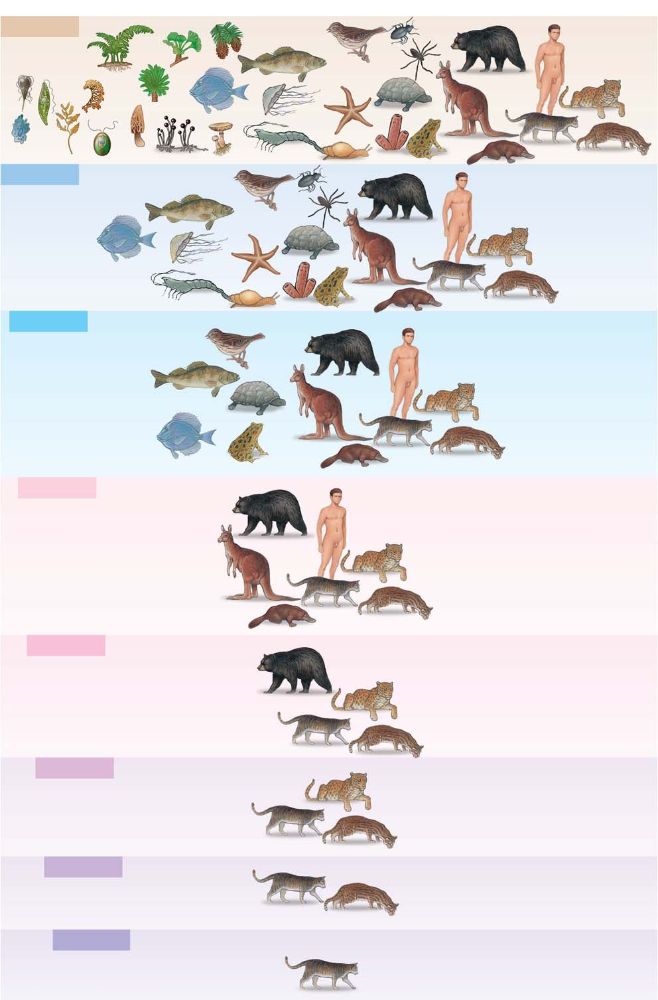
Comprensión de la diversidad: sistemática 485
arqueas. Con base en evidencia molecular, los biólogos ahora dividen a los procariotas en dos grandes grupos: Bacteria y Archaea . El reino Protista ha tenido una historia interesante. Los biólogos colocaron la Euglena , junto con otros organismos unicelulares tradicionalmente conocidos como protozoarios, en el reino Protista. En varios momentos también asignaron al reino Protista a las algas (incluidas las formas multicelulares), los oomicetos y los mohos mucilaginosos. En consecuencia, este reino se convirtió en un diverso grupo de organismos eucariotas principalmente unicelulares y acuáticos. Desde hace algunos años, los sistemáticos establecieron que los grupos protista no descendían de un ancestro común reciente. Como estudiará en el capítulo 26, muchos biólogos abandonaron el reino Protista (así como una clasifi cación de reinos para plantas y animales) y ahora asignan los eucariotas a cinco “supergrupos” con base en datos moleculares.
Los tres dominios forman las tres ramas principales del árbol de la vida
Con base en diferencias moleculares fundamentales entre bacterias, arqueas y eucariotas, los biólogos ahora clasifi can a los organismos en tres dominios: Archaea , Bacteria y Eukarya (eucarya) (eucariotas). Los sistemáticos infi rieron que los tres dominios son las tres ramas principales del árbol de la vida ( FIGURA 23-2 ). En el capítulo 25 se estudiarán los caracteres que distinguen dichos dominios. Como estudiará en el capítulo 24, los virus son un caso especial y no se clasifi can en alguno de los tres dominios.
organismos no podían asignarse con facilidad al reino vegetal o al reino animal. Por ejemplo, el organismo unicelular Euglena se ha clasifi cado en varias ocasiones en el reino vegetal y en el reino animal, pero en realidad no encaja en ninguno de ellos. La Euglena realiza fotosíntesis en la luz, pero en la oscuridad usa su fl agelo para moverse en busca de alimento (vea la fi gura 26-5). En 1866 un biólogo alemán, Ernst Haeckel, propuso el establecimiento de un tercer reino, Protista , para acomodar a las bacterias y otros microorganismos. Sin embargo, los biólogos ignoraron este reino durante casi cien años. En 1937, el biólogo marino francés Edouard Chatt on sugirió el término procariotique (“antes del núcleo”) para describir a las bacterias y el término eucariotique (“núcleo verdadero”) para describir a todas las otras células. Ahora los biólogos aceptan de manera universal esta dicotomía entre procariotas y eucariotas como una divergencia evolutiva fundamental. En la década de 1960, los avances en microscopia electrónica y técnicas bioquímicas revelaron más diferencias celulares que inspiraron muchas nuevas propuestas para la clasifi cación de los organismos. En 1969, R. H. Whitt aker propuso una clasifi cación de cinco reinos con base principalmente en la estructura celular y la forma en que los organismos obtienen nutrientes de su ambiente. (Aunque por lo general se le acredita a Whitt aker, el concepto de cinco reinos en realidad fue propuesto por primera vez en 1949 por T. L. Jahn y F. Jahn en su libro How to Know the Protozoa ). Whitt aker sugirió que los hongos (que incluyen setas, mohos y levaduras) se removieran del reino vegetal y se clasifi caran en su propio reino, Fungi . Después de todo, los hongos no son fotosintéticos y deben absorber nutrientes producidos por otros organismos. Los hongos también difi eren de las plantas en la composición de sus paredes celulares, en sus estructuras corporales y en sus modos de reproducción. El reino Prokaryotae se estableció para alojar a las bacterias, que son diferentes de todos los demás organismos en que no tienen núcleos distintivos ni otros organelos membranosos y no experimentan división mitótica (vea la fi gura 4-6). A fi nales de la década de 1970, Carl Woese, de la Universidad de Illinois, y sus colegas comenzaron a estudiar las relaciones evolutivas entre los organismos al analizar su ARNr 16S. Mediante análisis de secuencias, Woese usó variaciones en esta molécula universal para desafi ar la visión largo tiempo sostenida de que todos los procariotas están cercanamente emparentados y son muy parecidos unos a otros. Él demostró que existen dos grupos diferentes de procariotas, arqueas y bacterias. Woese argumentó que los procariotas representan dos de las tres ramas principales de los organismos. La hipótesis de Woese ganó apoyo en 1996, cuando Carol J. Bult, del Instituto de Investigación Genómica en Rockville, Maryland, reportó en la revista Science que ella y sus colaboradores secuenciaron el genoma completo de una arquea productora de metano, Methanococcus jannaschii . Cuando los investigadores compararon las secuencias génicas con las de dos bacterias secuenciadas antes, descubrieron que coincidían menos de la mitad de los genes. La secuencia genética indica que las arqueas tienen una combinación de genes parecidos a los de las bacterias y los eucariotas. Los biólogos han identifi cado otras importantes diferencias entre bacterias y arqueas. Por ejemplo, las bacterias se caracterizan por la presencia de un compuesto llamado peptidoglicano en sus paredes celulares, mientras que este compuesto no está presente en las
FIGURA 23-1 Principales categorías utilizadas en la clasifi cación Aquí se clasifi ca al gato doméstico ( Felis catus ) para ilustrar la organización jerárquica del sistema taxonómico de Linneo. Cada nivel es más incluyente que el que está bajo él, lo que signifi ca que incluye más grupos de organismos.
▲
Los biólogos clasifi can a los organismos en tres grandes categorías llamadas dominios.
Dominio Eukarya Dominio Bacteria Dominio Archaea
Ancestro común de todos los organismos vivos
FIGURA 23-2 Animada Los tres dominios Este cladograma, un tipo de árbol evolutivo, ilustra las relaciones evolutivas entre organismos en los tres dominios. Cada rama representa un clado, un grupo de organismos con un ancestro común reciente. Cada nodo ( círculo ) representa el punto cuando dos grupos divergieron uno del otro.
PUNTO CLAVE
486 Capítulo 23
linaje poblacional. En este sistema no se requieren categorías taxonómicas. Los defensores del PhyloCode argumentan que este sistema evita el problema de cambiar los nombres cuando el descubrimiento de nuevas especies requiere modifi car las categorías. El sistema también facilita la nomenclatura de los clados uno a la vez conforme se descubren. En esta edición de Biología los organismos se clasifi can usando los tres dominios y también se les clasifi ca usando la taxonomía tradicional. Se recuerda a los lectores con frecuencia que las clasifi caciones tradicionales son categorías desarrolladas por conveniencia y que cambian conforme se analizan nuevos datos. Los taxonomistas deben reclasifi car a los organismos conforme ajustan las hipótesis acerca de las relaciones entre los organismos.
Los árboles fi logenéticos muestran hipótesis de relaciones evolutivas
Los sistemáticos usan árboles fi logenéticos para representar de manera gráfi ca las hipótesis de relaciones evolutivas entre organismos que tienen un ancestro común. En la fi gura 23-2 se usa un árbol fi logenético para ilustrar la relación de los tres dominios y el árbol fi logenético de la
FIGURA 23-3 ilustra las principales ramas que constituyen cada uno de los tres dominios. Este último es una de las versiones actuales del árbol de la vida.
Algunos biólogos se alejan de las categorías de Linneo
La mayoría de los biólogos ahora clasifi can a los organismos en los tres dominios. Algunos siguen clasifi cando los organismos en reinos: Bacteria, Archaea, Fungi, Plantae y Animalia, pero muchos sistemáticos ya no reconocen el “reino Protista”. (Consulte la TABLA 23-2 ). En vez de ello, asignan los protistas a varios “supergrupos” que refl ejan con más precisión las relaciones evolutivas. Muchos sistemáticos argumentan que las tradicionales categorías jerárquicas de Linneo son limitantes y no se ajustan bien a los hallazgos recientes. Sostienen que el uso de reinos, clases y otras categorías son problemáticas y que la clasifi cación que emplea estas categorías debe modifi carse con frecuencia conforme los investigadores reúnen más datos. El anterior reino Protista es un buen ejemplo de la necesidad de reevaluar continuamente y cambiar las clasifi caciones. Algunos sistemáticos prefi eren clasifi car los organismos en clados. Un clado se defi ne como un grupo de organismos que comparten caracteres (características) heredadas de un ancestro común. Dichos sistemáticos prefi eren identifi car clados y clasifi carlos en uno de los tres dominios, en vez de usar el tradicional sistema jerárquico. Algunos biólogos usan un método de clasifi cación conocido como PhyloCode , en el que los organismos se agrupan en clados con base en relaciones evolutivas. Una especie se defi ne como un segmento de un
Dominios y reinos
Dominio Reino Características Papel ecológico y comentarios
Bacteria
Bacteria Procariotas (carecen de núcleos distintivos y otros organelos membranosos), unicelulares, microscópicos, paredes celulares usualmente compuestas de peptidoglicano.
La mayoría son desintegradores, algunos parásitos (y patógenos), algunos autótrofos quimiosintéticos, algunos fotosintéticos, importantes en el reciclaje de nitrógeno y otros elementos, algunos se utilizan en procesos industriales.
Archaea Archaea Procariotas, unicelulares, microscópicos, peptidoglicano ausente en paredes celulares, difi ere bioquímicamente de las bacterias.
Los metanógenos son anaerobios que habitan drenajes, pantanos y sistemas digestivos animales; halófi los extremos habitan ambientes salinos, termófi los extremos habitan ambientes calurosos, en ocasiones ácidos.
Los protistas se clasifi caron antes en el reino Protista; ahora se asignan a varios “supergrupos”
Eucariotas, principalmente unicelulares o multicelulares simples. Los protozoarios son una parte importante del zooplancton. Las algas son productores importantes, especialmente en ecosistemas marinos y de agua dulce, importante fuente de oxígeno. Algunos protistas causan enfermedades, por ejemplo, malaria.
Plantae Eucariotas, multicelulares, fotosintéticos, poseen órganos reproductores multicelulares, alternación de generaciones, paredes celulares de celulosa.
La biosfera terrestre depende de las plantas en su papel como productores primarios, importante fuente de oxígeno en la atmósfera de la Tierra.
Eukarya *
Fungi Eucariotas, heterótrofos, absorben nutrientes, no realizan fotosíntesis, cuerpo compuesto de hifas con forma de hilo que forman masas enmarañadas que infi ltran alimento o hábitat, paredes celulares de quitina.
Desintegradores, algunos parásitos (y patógenos), algunos forman importantes relaciones simbióticas con raíces de plantas (micorrizas) o algas (líquenes), algunos se utilizan como alimento, la levadura se usa en la elaboración de pan y bebidas alcohólicas; algunos se usan para fabricar químicos industriales o antibióticos, responsables de gran parte de la putrefacción y la pérdida de cultivos.
Animalia Eucariotas, heterótrofos multicelulares, muchos presentan diferenciación tisular y sistemas orgánicos complejos, la mayoría pueden moverse mediante contracción muscular, tejido nervioso coordina respuestas a los estímulos.
Consumidores; algunos especializados como herbívoros, carnívoros o comedores de detritos.
*Para otro enfoque de la clasifi cación de los eukarya consulte la fi gura 23-3.
TABLA 23-2
⎛ ⎜ ⎜ ⎜ ⎜ ⎜ ⎜ ⎜ ⎜ ⎜ ⎜ ⎨ ⎜ ⎜ ⎜ ⎜ ⎜ ⎜ ⎜ ⎜ ⎜ ⎝
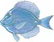
Comprensión de la diversidad: sistemática 487
Los sistemáticos todavía consideran otras hipótesis
Cuando se piensa en cómo los organismos adquieren sus genes, se piensa en la transferencia genética vertical en la que los genes se transmiten del progenitor a la descendencia dentro de la misma especie. Conforme los biólogos investigaban el origen y las relaciones de los dominios, descubrieron que la evolución no siempre es lineal. Durante el curso de la evolución los genes no sólo se transmitieron “verticalmente” de una generación a la siguiente, sino que también se intercambiaron de manera lateral. Dicho intercambio genético entre organismos en un taxón y organismos no relacionados en otro taxón se conoce como transferencia genética horizontal o transferencia genética lateral . En este proceso los genes se mueven de una especie a otra en la misma generación. La transferencia genética horizontal puede ocurrir de varias maneras, ya sea por intercambio de ADN entre diferentes poblaciones o especies de bacterias, o por cruza entre grupos cercanamente emparentados. En eucariotas la transferencia genética horizontal ha ocurrido por endosimbiosis, un proceso en el que un organismo vive dentro de la célula de otro organismo y los dos se convierten en uno solo que es funcional. De hecho, es muy probable que las células eucariotas evolucionaran a partir de células procariotas que vivieron de manera simbiótica una dentro de otra. Recuerde que el origen de mitocondrias y cloroplastos se considera ocurrió a partir de procariotas que vivieron como endosimbiontes dentro de otras células (vea el capítulo 21).
El tipo de árbol fi logenético que se usa en este libro se llama cladograma . Cada rama de un cladograma representa un clado, un grupo de organismos con un ancestro común. Cada punto de ramifi cación, conocido como nodo (ilustrado mediante un círculo), representa la divergencia, o división, de dos o más grupos nuevos de un ancestro común. Por tanto, el nodo representa el ancestro común más reciente de cada clado mostrado por las ramas. De esta forma, un cladograma usa las posiciones de los puntos de ramifi cación para ilustrar la relación evolutiva hipotética entre taxones. Cada rama representa una o más características compartidas por el clado, pero que no se encuentran en los ancestros del clado. (En la siguiente sección se estudian los caracteres derivados compartidos ). Estas características compartidas pueden indicarse mediante etiquetas o por barras a través de las ramas. Los cladogramas están enraizados si se conoce al ancestro común más reciente. La raíz , o nodo en la base del cladograma, representa al ancestro común más reciente de todos los clados mostrados en el árbol. Conforme lea el resto del capítulo, estudiará más acerca de la construcción de los cladogramas. Aunque un cladograma representa las relaciones evolutivas de cada grupo a lo largo del tiempo, las longitudes de las ramas no indican cuándo evolucionó una especie particular. Otros tipos de árboles fi logenéticos, por ejemplo, los fi logramas , pueden construirse para indicar el tiempo, o la rapidez de evolución, así como para indicar las relaciones entre taxones. En un fi lograma, la longitud de las ramas es proporcional a la cantidad de cambio inferido en las características.
Proteobacteria
Cianobacteria
Gram-positivas
Clamidias
Espiroquetas
Actinobacterias
Euriarqueota
Crenarqueota
Excavados
Cromalveolados
Rhizarias
Algas rojas
Algas verdes
Arqueoplástidos Unicontos
Plantas terrestres
Hongos
Coanoflagelados
Animales
Dominio Eukarya Dominio Archaea Dominio Bacteria
Ancestro común más reciente de todos los seres vivos
FIGURA 23-3 El árbol de la vida, una obra en progreso Aquí se muestran algunas de las principales ramas de cada uno de los tres dominios. Conforme se analicen nuevos datos, cambiarán las relaciones de algunas de las ramas.
488 Capítulo 23
de genes, de que la transferencia genética horizontal entre bacterias y arqueas dio origen a los eucariotas. La transferencia genética horizontal parece ser un proceso continuo entre los miembros de los tres dominios. La evolución de la sistemática refl eja el proceso creativo y dinámico de la ciencia. Los sistemáticos son muy sensibles a los datos nuevos y, en consecuencia, la clasifi cación de los organismos en todos los niveles es un proceso siempre cambiante. Aunque muchos biólogos se alejan de un sistema jerárquico, algunos sugieren agregar nuevos grupos de modo que el enfoque clásico se actualice con los nuevos hallazgos. Cualquiera que sea el enfoque empleado, la meta de la sistemática es basar la clasifi cación en el cambio y las relaciones evolutivas.
Repaso
■ ¿Cuáles son algunas de las características distintivas de cada uno de los tres dominios? ¿Y del reino Fungi?
■ ¿En cuál dominio y reino clasifi caría el lector a cada uno de los siguientes: el sauce blanco, la bacteria Escherichia coli , la tenia y el moho del pan negro?
■ ¿Qué representa cada rama en un cladograma? ¿Y cada nodo?
23.3 RECONSTRUCCIÓN DE LA HISTORIA EVOLUTIVA
OBJETIVOS DE APRENDIZAJE
5 Revisar de manera crítica las difi cultades que se encuentran al elegir criterios taxonómicos. 6 Aplicar el concepto de caracteres derivados compartidos en la clasifi cación de organismos. 7 Describir cómo los análisis de homologías moleculares contribuyen a la ciencia de la sistemática. 8 Contrastar los taxones monofi lético, parafi lético y polifi lético.
La taxonomía moderna se basa en la evolución. La meta es reconstruir la fi logenia (en sentido literal, “producción de fi los”), la historia evolutiva de un grupo de organismos a partir de un ancestro común. Conforme los sistemáticos determinan las relaciones evolutivas entre especies, y entre especies y taxones superiores, construyen clasifi caciones con base en la ascendencia común. En consecuencia, la sistemática refl eja la integración de todos los procesos y evidencias evolutivos. La sistemática está en el centro de cómo se entiende y explica la existencia no aleatoria y las relaciones de las formas de vida sobre la Tierra. Una vez establecidas las fi logenias, ayudan a responder otras preguntas de la biología. Por ejemplo, las fi logenias ayudan a comprender los patrones evolutivos que pueden proporcionar pistas acerca del origen y la dispersión del VIH y otros patógenos. Las fi logenias también ayudan a los biólogos a identifi car nuevas especies y predecir sus características. Los sistemáticos pueden clasifi car una nueva especie con base en los caracteres específi cos que comparte con otros organismos en un taxón particular. Entonces pueden inferir que la nueva especie comparte otros caracteres con los organismos en dicho grupo. Conforme lea las siguientes secciones recuerde que las fi logenias son hipótesis puestas a prueba. Se sostienen o rechazan mediante los datos disponibles. La sistemática avanza al reevaluar en forma constante datos, hipótesis y constructos teóricos. Conforme se descubren nuevos datos y se reinterpretan los datos anteriores, los sistemáticos modifi can sus hipótesis. Como resultado, se revisa continuamente la comprensión de cómo se relacionan los organismos y la forma en que
Con base en lo que se sabe ahora acerca de la transferencia genética horizontal, algunos sistemáticos argumentan que el ancestro común de todos los seres vivos pudo ser una comunidad de especies que intercambiaron sus genes. Algunos sistemáticos sugieren que no hay un árbol de la vida simple y han propuesto hipótesis alternativas. Un grupo plantea la hipótesis de un arbusto complejo con muchas ramas interconectadas ( FIGURA 23-4a ). Investigadores de la Universidad de California en Los Ángeles propusieron recientemente otro enfoque: que el árbol de la vida en realidad puede ser un anillo de vida ( FIGURA 23-4b ). Estos sistemáticos proponen la hipótesis, con base en su análisis de cientos
Proteobacteria
Cyanobacteria
Euryarchaeota
Crenarchaeota
- El enfoque de tres dominios se dibujó para mostrar transferencia genética horizontal como un proceso continuo entre dominios y también entre grupos dentro de cada dominio. Sólo se etiquetan algunas de las ramas. La flecha café diagonal representa endosimbiosis mitocondrial; la flecha verde diagonal representa endosimbiosis de cloroplasto.
Bacteria Archaea Eukarya
F
u
n
g i
P
l
a
n
t a
e
P
r
o t
i s
t a
s
P r
o t
i s
t a
s
P r
o t
i s
t a
s
A
n i
m a
l i a
- El anillo de la vida se basa en la hipótesis de que la transferencia genética lateral entre bacterias y arqueas dio origen a los eucariotas.
Bacteria Archaea
Protistas Animales Plantas Hongos
Primer eucariota
FIGURA 23-4 Otras maneras de representar el árbol de la vida (Inciso a con base en Doolittle, W. F., Science, vol. 284, pp. 2124 − 2128, 1999; inciso b con base en Rivera M. C. y J. A. Lake. Nature, vol. 431, pp. 152-155, 9 de septiembre de 2004.)
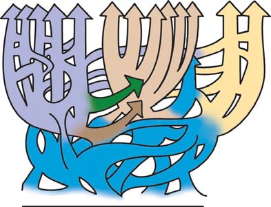
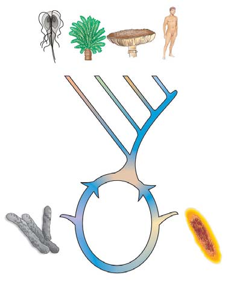
Comprensión de la diversidad: sistemática 489
nes taxonómicas, el sistemático primero examina las características en el grupo más grande (como fi lo o clase) de los organismos por estudiar y las interpreta como indicio de la ascendencia común más remota . Estos caracteres ancestrales compartidos , o plesiomorfi as , son rasgos que estuvieron presentes en una especie ancestral y permanecieron en todos los grupos descendientes de dicho ancestro. Por ejemplo, la columna vertebral, presente en todos los vertebrados, es un carácter ancestral para estudiar las clases dentro del subfi lo Vertebrata. Estudiar la presencia o ausencia de la columna vertebral no ayuda a discriminar entre varias clases de vertebrados (por ejemplo, entre anfi bios y mamíferos) porque todos los individuos en estas clases tienen columna vertebral. Cuando dos poblaciones se separan y comienzan a evolucionar de manera independiente, algunos de sus rasgos homólogos cambian como resultado de mutación, selección natural y deriva genética. Los rasgos novedosos que evolucionan se conocen como caracteres derivados compartidos , o sinapomorfi as . Observe que los caracteres derivados compartidos se originan en un ancestro común reciente y están presentes en sus descendientes. Las especies que comparten caracteres derivados forman un clado. Los sistemáticos usan caracteres derivados compartidos para identifi car puntos donde los grupos divergen unos de otros. Un rasgo visto como carácter derivado en un taxón más incluyente (más ancho) también puede considerarse un carácter ancestral en un taxón menos incluyente (más estrecho). La ascendencia común más reciente se indica por la clasifi cación en grupos taxonómicos cada vez menos incluyentes, con caracteres derivados compartidos cada vez más específi cos. Por ejemplo, los tres pequeños huesos en el oído medio son útiles para identifi car un punto de ramifi cación entre reptiles y mamíferos. La evolución de este carácter derivado fue un evento único y sólo los mamíferos tienen estos huesos. Sin embargo, si compara a los mamíferos entre ellos, los tres huesos del oído son un carácter ancestral compartido porque todos los tienen. En consecuencia, no tienen valor para distinguir entre taxones de mamíferos. Para establecer puntos de ramifi cación entre los mamíferos deben usarse otros caracteres. Si compara perros, cabras y delfi nes (todos ellos mamíferos), se encuentra que perros y cabras tienen pelaje abundante, mientras que los delfi nes no lo tienen. El pelo es un rasgo ancestral en los mamíferos y por tanto no puede usarse como evidencia de que perros y cabras comparten un ancestro común más reciente. En contraste, la virtual ausencia de pelo en los delfi nes maduros es un carácter derivado dentro de los mamíferos. Cuando se comparan perros, delfi nes y ballenas se descubre que delfi nes y ballenas comparten este carácter derivado, lo que brinda evidencia de que dichos animales evolucionaron a partir de un ancestro común no compartido por los perros.
Los biólogos eligen con cuidado los criterios taxonómicos
Tanto peces como delfi nes tienen cuerpos aerodinámicos, pero esta característica es homoplástica y no indica relaciones evolutivas cercanas. En contraste, los delfi nes comparten importantes caracteres derivados homólogos (sinapomorfi as) con los mamíferos: glándulas mamarias que producen leche para las crías, tres pequeños huesos en el oído medio y un diafragma muscular que ayuda a mover el aire hacia los pulmones y desde ellos. Por ende, el delfín se clasifi ca como mamífero. Aunque los delfi nes tienen más caracteres derivados compartidos en común con los humanos que con los peces, algunos rasgos los comparten los tres. Entre los caracteres ancestrales compartidos están un cor dón nervioso tubular dorsal y, durante el desarrollo embrionario, un
se clasifi can los organismos. La sistemática es una ciencia dinámica que cambia conforme los biólogos descubren nuevas especies y usan técnicas cada vez más avanzadas para investigar las relaciones evolutivas entre los organismos. Recuerde que una población está constituida por todos los individuos de la misma especie que viven en un área particular. Una población tiene una dimensión en el espacio (su rango geográfi co) y también una dimensión en el tiempo. Cada población se extiende hacia atrás en el tiempo. Un poco como las ramas de un árbol, una población puede divergir lo sufi ciente de otras poblaciones para convertirse en una nueva especie (que puede representarse mediante una nueva rama del árbol; vea los capítulos 19 y 20). Las especies tienen varios grados de relaciones evolutivas entre sí dependiendo del grado de divergencia genética desde que sus poblaciones divergieron de un ancestro común.
Las estructuras homólogas son importantes para determinar las relaciones evolutivas
Cómo determinar la fi logenia y cómo agrupar las especies en taxones superiores (géneros, familias, órdenes, clases o fi los) pueden ser decisiones difíciles. Los biólogos basan sus juicios acerca del grado de relación en la medida de la semejanza entre las especies. Examinan rasgos estructurales, fi siológicos, de desarrollo, de comportamiento y moleculares, así como evidencia fósil. Cuando examinan dichos rasgos, buscan homologías entre diferentes organismos. Recuerde del capítulo 18 que homología se refi ere a la presencia, en dos o más especies, de una estructura derivada de un ancestro común reciente. Por ejemplo, los huesos en el ala de un murciélago, la garra de un perro y la mano de un humano son homólogos. Como se estudiará, la identifi cación de rasgos homólogos es muy importante para inferir la fi logenia. Con frecuencia es difícil determinar si los rasgos son similares como resultado de homología. Aunque las alas de una mariposa están adaptadas para el vuelo, su estructura es diferente de las alas de las aves y estos animales no comparten un ancestro alado común. En ocasiones, estructuras similares evolucionan cuando especies no relacionadas o con relación distante se adaptan a condiciones ambientales similares. Por ende, las alas pueden presentarse en dos o más especies no derivadas de un ancestro común reciente. Recuerde del capítulo 18 que la evolución independiente de estructuras similares en organismos con relación distante se conoce como evolución convergente . Tiburones y delfi nes tienen formas corporales similares, mas derivadas de manera independiente, porque se adaptaron a ambientes (acuático) y estilos de vida (depredador) similares. En ocasiones es obvio que la evolución convergente ocurra. En otros casos, los investigadores deben poner a prueba sus hipótesis usando todos los datos disponibles. Otro reto para decidir acerca de la homología es la reversión , en la que un rasgo regresa a su estado ancestral. Una reversión remueve una semejanza que evolucionó. Una característica que en la superfi cie parece homóloga pero en realidad se adquiere de manera independiente por evolución convergente o reversión se dice que muestra homoplasia . Distinguir entre homología y homoplasia puede ser desafi ante.
Los caracteres derivados compartidos proporcionan pistas acerca de la fi logenia
Determinar cuáles rasgos indican relaciones evolutivas es en extremo importante. ¿Cómo interpreta un sistemático el signifi cado de las semejanzas entre los organismos? Al tomar decisiones acerca de las relacio-
490 Capítulo 23
de que todas las aves deben tener picos, plumas, no poseer dientes, etcétera. Luego vuelven a examinar el mundo viviente y observan si algunos organismos pueden razonablemente llamarse aves sin que se ajusten a la defi nición actual de “ave”. Si no es así, se sostiene la defi nición. Si se presentan demasiadas excepciones, pueden modifi car la defi nición o incluso abandonarla. En ocasiones los sistemáticos determinan que una aparente excepción (el murciélago, por ejemplo) parece un ave sólo de manera superfi cial y no debe considerarse como tal. El murciélago tiene todas las características básicas de un mamífero, como es el pelo y las glándulas mamarias que producen leche para las crías.
Las homologías moleculares ayudan a aclarar la fi logenia
Cuando evoluciona una nueva especie, no siempre muestra diferencias fenotípicas obvias cuando se le compara con especies cercanamente emparentadas. Por ejemplo, dos especies distintas de moscas de la fruta pueden parecer idénticas. Sin embargo, parte de su ADN, proteínas y otras moléculas son diferentes. Dichas variaciones en la estructura de macromoléculas específi cas entre especies, como las diferencias en estructura anatómica, son el resultado de mutaciones. Los avances en la biología molecular proporcionan las herramientas para que los biólogos comparen las macromoléculas de varios organismos. De hecho, ahora los organismos pueden identifi carse a partir de su estructura molecular. En 2003, científi cos en la Universidad de Guelph, en Canadá, propusieron en la revista británica Proceedings of the Royal Society que se identifi caran todas las cosas vivas por sus secuencias únicas de ADN o ARN en lugar de basarse en su estructura física. La secuencia molecular seleccionada puede usarse como marcador genético, o código de barras , para identifi car organismos, en forma muy parecida a los códigos de barras en los artículos de una tienda de autoservicio. Este método puede emplearse para distinguir entre especies que parecen iguales. Por ejemplo, hasta hace muy poco el elefante africano y el elefante indio eran las únicas dos especies reconocidas de elefantes vivos. Mediante métodos moleculares, los biólogos demostraron que existen al menos dos especies distintas de elefantes africanos. Cada especie tiene su propio código de barras de ADN distintivo. Los biólogos pueden usar los códigos de barras para identifi car la especie de un organismo en cualquier etapa de la vida, incluso como huevo o semilla. La ciencia de la sistemática molecular se enfoca en la estructura molecular para aclarar relaciones evolutivas. Para comparar las macromoléculas de los organismos por estudiar se usan secuencias de ADN, ARN y aminoácidos. Las macromoléculas que son funcionalmente similares en dos tipos diferentes de organismos se consideran homólogas si su secuencia subunitaria es similar. Dichas comparaciones ofrecen a los sistemáticos valiosa información acerca del grado de relación entre los organismos. Mientras más secuencias subunitarias de dos especies coincidan, más estrechamente emparentadas estarán las especies. El número de diferencias en ciertas secuencias de nucleótidos de ADN o ARN, o en secuencias de aminoácidos en dos grupos de organismos, pueden refl ejar cuánto tiempo ha transcurrido desde que se ramifi caron a partir de un ancestro común. (Esto sólo puede ser cierto si los cambios moleculares ocurren a un ritmo estable). En consecuencia, pueden usarse macromoléculas específi cas como relojes moleculares . Muchos sistemáticos observan la estructura del ARN ribosomal como un auxiliar para determinar fi logenias. Todos los organismos conocidos tienen ribosomas que funcionan en la síntesis de proteínas y ciertas secuencias de nucleótidos de ARN ribosomal se han conservado bastante en la evolución. Recuerde que la división de los organismos en
notocordio (barra esquelética) y hendiduras branquiales rudimentarias. Estos caracteres ancestrales compartidos (plesiomorfi as) indican una ascendencia común y sirven como base para la clasifi cación. La ascendencia es más remota entre el delfín y el pez que entre el delfín y el humano. Por tanto, aunque peces, humanos y delfi nes están agrupados en un taxón más incluyente, el fi lo Chordata, humanos y delfi nes también se clasifi can en la clase Mammalia, un taxón menos incluyente dentro del fi lo Chordata, lo que indica que están más cercanamente emparentados. Determinar cuáles rasgos ilustran mejor las relaciones evolutivas puede ser un gran reto. Por ejemplo: ¿cuáles son las características taxonómicas más importantes de un ave? Uno podría mencionar plumas, pico, alas, ausencia de dientes, ponen huevos y endotermia (un animal endotérmico usa el calor metabólico para mantener una temperatura corporal constante a pesar de la variación en la temperatura ambiental). El ornitorrinco y algunos otros mamíferos (miembros de un grupo llamado monotremas) tienen muchas de estas mismas características: picos, ausencia de dientes, ponen huevos y endotermia. Sin embargo, no se les clasifi ca como aves ( FIGURA 23-5 ). No obstante, ningún mamífero tiene plumas. ¿Este rasgo es un diagnóstico absoluto de las aves? De acuerdo con la sabiduría taxonómica convencional, la presencia o ausencia de plumas determina qué es y qué no es un ave. Sin embargo, como se estudiará más adelante, ¡las aves evolucionaron a partir de un grupo de dinosaurios cuyos fósiles tienen impresiones de plumas! La presencia de plumas en algunos dinosaurios y en las aves es un carácter derivado compartido que muestra que están cercanamente emparentados. Muchos biólogos clasifi can ahora a las aves como parte del clado reptil. Por lo general, los organismos se clasifi can con base en una combinación de rasgos en vez de un solo rasgo. El signifi cado de dichas combinaciones se determina de manera inductiva; esto es, mediante integración e interpretación de datos. Tal inducción es una parte necesaria del proceso de la ciencia. Los sistemáticos pueden plantear la hipótesis
FIGURA 23-5 ¿Este animal es un ave? Algunos mamíferos, como el ornitorrinco, ponen huevos, tienen picos y carecen de dientes. Sin embargo, el ornitorrinco no tiene plumas y nutre a sus crías con leche secretada por glándulas mamarias.
© Jean Philippe Varin/Jacana/Photo Researchers, Inc.
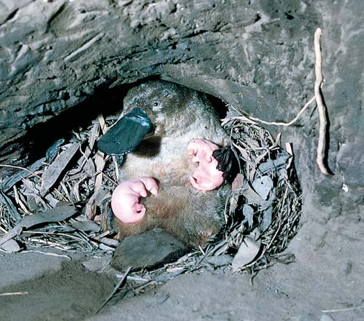
Comprensión de la diversidad: sistemática 491
que producen leche para las crías, tres pequeños huesos en el oído medio y un diafragma muscular. Se considera que todos los mamíferos evolucionaron a partir de un mamífero ancestral común que tenía estos caracteres derivados compartidos y todos los descendientes de este ancestro son mamíferos. Los taxones monofi léticos se llaman clados. Se trata de grupos naturales porque representan verdaderas relaciones evolutivas e incluyen a todos los parientes cercanos. Los taxones hermanos , o grupos hermanos, comparten entre ellos un ancestro común más reciente que lo que cualquier taxón comparte con algún otro grupo mostrado en
tres dominios se basó, en gran medida, en la comparación de ARN ribosomal por parte de Carl Woese y su equipo de investigación. Los ribosomas de arqueas y bacterias contienen tres tipos de ARN, llamados en orden de tamaño creciente: 5S, 16S y 23S. (Estos números son coefi cientes de sedimentación, medidas de tamaño relativo, que se utilizan para caracterizar el comportamiento de una partícula cuando se centrifuga). Los ARN 5S y 16S se han usado ampliamente para determinar relaciones evolutivas entre bacterias. Estas secuencias genéticas de ARNr son útiles porque el número de pares de bases es manejable y porque dichas moléculas se transcriben desde regiones de ADN altamente conservadas. Además, dichas secuencias genéticas contienen regiones variables que son específi cas de la especie para varios tipos de bacterias y arqueas. Los investigadores también han empleado la comparación de secuencias de ARN ribosomal para desafi ar la idea, alguna vez bastante aceptada, de que los hongos están estrechamente relacionados con las plantas. De acuerdo con el análisis de ARN ribosomal, los hongos están más cercanamente emparentados con los animales que con las plantas; esto es, animales y hongos comparten un ancestro común más reciente, acaso un fl agelado. Dado que los genes pueden evolucionar a ritmos diferentes, los investigadores ahora suelen comparar secuencias subunitarias de muchos genes diferentes de los organismos en estudio. Se han tomado muestras de datos de secuencias moleculares de más de 10% de todas las especies conocidas. Las herramientas muy precisas que proporciona la biología molecular ha puesto a la sistemática a la vanguardia de la investigación biológica. Los científi cos del programa Broad’s Genome Sequencing and Analysis (Secuenciación y análisis del genoma de Broad), en el MIT y Harvard, recientemente ofrecieron otro ejemplo de la sistemática molecular aplicada ( FIGURA 23-6 ). Los investigadores secuenciaron el genoma del perro doméstico y compararon regiones de codifi cación de más de 13,000 genes de perro con genes de humano y ratón. Luego, seleccionaron exones e intrones y compararon sus secuencias de nucleótidos en 30 cánidos vivos (miembros de la familia Canidae, a la que pertenece el perro). Los datos recolectados permitieron a estos investigadores construir un cladograma de las relaciones fi logenéticas de los cánidos. Confi rmaron investigaciones anteriores que mostraban que el pariente más cercano del perro es el lobo gris. Estos datos de nucleótidos se usan para identifi car genes responsables de enfermedades específi cas y pueden compararse con el genoma humano con la intención de comprender mejor las muchas enfermedades que los cánidos tienen en común con los humanos.
Los taxones se agrupan con base en sus relaciones evolutivas
Los biólogos clasifi caron a la mayoría de los organismos conocidos antes de los días de la fi logenética. Los sistemáticos modernos usan análisis fi logenéticos para poner a prueba estas relaciones hipotéticas entre grupos de organismos. Con apoyo cada vez mayor de datos moleculares confi rman o modifi can la obra de los biólogos anteriores. Con sus datos, los sistemáticos construyen cladogramas para refl ejar las relaciones entre clados. Los cladogramas muestran tres tipos de relaciones taxonómicas: monofi lética, parafi lética y polifi lética. Un grupo monofi lético incluye una especie ancestral y todos sus descendientes ( FIGURA 23-7a ). Se defi ne mediante caracteres derivados compartidos. Por ejemplo, los mamíferos tienen glándulas mamarias
EXPERIMENTO CLAVE
PREGUNTA: ¿Cómo se relaciona el perro con otros cánidos?
HIPÓTESIS: Análisis de datos moleculares de varios cánidos aclararán sus relaciones evolutivas.
EXPERIMENTO: El investigador Kerstin Lindblad-Toh y sus colaboradores secuenciaron el genoma del perro doméstico. Compararon regiones de codifi cación de más de 13,000 genes de perro con genes correspondientes de humano y ratón. Luego seleccionaron 12 exones y 4 intrones y los secuenciaron en 30 de 34 cánidos vivos.
Chacal lomo bandeado ( Canis adustus )
Chacal lomo negro ( Canis mesomelas )
Chacal dorado ( Canis aureus ) Perro ( Canis lupus familiaris )
Lobo gris ( Canis lupus )
Coyote ( Canis latrans )
Lobo etiope ( Canis simensis )
Cuón ( Cuon alpinus )
Perro salvaje africano ( Lycaon pictus )
RESULTADOS Y CONCLUSI Ó N: Los análisis de las comparaciones de las secuencias de nucleótidos de exones e intrones permitieron a los investigadores construir un cladograma de la especie Canidae. Los datos indicaron que el perro está más cercanamente emparentado con el lobo gris. (La divergencia secuencial de las secuencias de exón e intrón nucleares es 0.04% y 0.21, respectivamente). Los dos chacales africanos (rama a la izquierda) son el grupo hermano de este clado, lo que sugiere un origen africano para estos cánidos.
Lindblad-Toh, K. et al. “Genome Sequence, Comparative Analysis and Haplotype Structure of the Domestic Dog”. Nature, vol. 438, 8 de diciembre de 2005.
FIGURA 23-6 Filogenia molecular Las semejanzas moleculares indican que el perro está cercanamente emparentado con el lobo gris. Observe que algunos biólogos mencionan el nombre científi co del perro doméstico como Canis familiaris y otros, incluidos el Instituto Smithsoniano y la American Society of Mammalogists, consideran al perro como una subespecie del lobo gris y citan su nombre como Canis lupus familiaris .
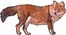
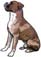
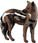
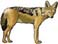
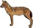
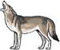
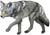
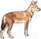
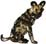
492 Capítulo 23
mente los taxones polifi léticos hasta que la investigación proporciona datos adicionales.
Repaso
■ ¿En qué se diferencian los caracteres ancestrales compartidos de los caracteres derivados compartidos?
■ ¿Por qué los caracteres ancestrales compartidos no proporcionan evidencia de las relaciones entre los organismos dentro de un taxón que tienen dichos rasgos? Ofrezca un ejemplo.
■ ¿Cómo contribuye la biología molecular con la ciencia de la sistemática?
■ ¿Por qué los sistemáticos prefi eren los taxones monofi léticos a los taxones polifi léticos?
■ ¿Por qué cambian constantemente las representaciones del árbol de la vida?
el cladograma. En la fi gura 23-7, los taxones 2 y 3 son taxones hermanos; los taxones 5 y 6 también son taxones hermanos. Un grupo parafi lético es un grupo que contiene un ancestro común y algunos de sus descendientes, mas no todos ( FIGURA 23-7b ). Los miembros del grupo comparten caracteres ancestrales. Como estudiará más adelante en este capítulo, la clase Reptilia es parafi lética porque no incluye a todos los descendientes del ancestro común más reciente de los reptiles. Las aves comparten un ancestro común reciente con los reptiles. Un grupo polifi lético consiste de varias líneas evolutivas que no comparten el mismo ancestro común reciente ( FIGURA 23-7c ). Los biólogos quizá clasifi caron juntos por error a los miembros de tal grupo porque dichos organismos comparten características similares (homoplásticas) que surgieron por evolución convergente. Los sistemáticos evitan construir taxones polifi léticos porque no son naturales y representan mal las relaciones evolutivas. En ocasiones se aceptan temporal-
Los grupos de organismos pueden describirse como monofi léticos, parafi léticos o polifi léticos. Sólo los grupos monofi léticos se consideran clados.
Ancestro común de los grupos 4, 5 y 6
D
1 2 3 4 5 6
A
B
E C
Ancestro común de los grupos 2 y 3
Ancestro común de todos los grupos mostrados
Grupo I
Grupo II
- Los grupos I y II son monofiléticos o clados. Cada uno incluye un ancestro común y todos sus descendientes.
1 2 3 4 5 6
Ancestro común de los grupos 4, 5 y 6
A
B
D
E C
Grupo III
- El grupo III es parafilético. Incluye algunos, mas no todos, los descendientes del ancestro común reciente indicado en el nodo D.
FIGURA 23-7 Animada Relaciones evolutivas En las tres fi guras, el punto de ramifi cación en el nodo A representa el ancestro común de todos los grupos mostrados. El nodo B representa el ancestro común de los grupos 2 a 6. El nodo C representa el ancestro común de los grupos 2 y 3. El nodo D representa el ancestro común de los grupos 4, 5 y 6. El nodo E representa el ancestro común de los grupos 5 y 6. La ascendencia común es la base para la toma de decisiones acerca de la clasifi cación.
Ancestro común más reciente de los grupos 2 y 3
1 2 3 4 5 6
A
B
E
Grupo IV
- El grupo IV es polifilético. Los miembros de este grupo no comparten el mismo ancestro común reciente.
Ancestro común más reciente de los grupos 4, 5 y 6
D
C
PUNTO CLAVE
Comprensión de la diversidad: sistemática 493
Los biólogos que usan el tradicional enfoque sistemático evolutivo usan semejanzas fenotípicas y una combinación de caracteres ancestrales y derivados compartidos para establecer relaciones evolutivas y construir clasifi caciones. Aunque la mayoría de los taxones que actualmente reconocen son monofi léticos, los sistemáticos evolutivos también reconocen taxones parafi léticos. (Recuerde que los grupos parafi léticos incluyen algunos, mas no todos, los grupos de organismos que comparten el mismo ancestro común más reciente). En contraste con los cladistas, los sistemáticos evolutivos reconocen la clase Reptilia como un grupo válido que contiene serpientes, lagartijas, cocodrilos, dinosaurios y tortugas, aun cuando esta clase sea parafi lética; no incluye todos los subgrupos, como las aves, que evolucionaron a partir del reptil ancestral ( FIGURA 23-8b ). Los sistemáticos evolutivos asignan las aves a una clase separada porque divergieron notablemente de los reptiles.
El análisis de grupos externos se usa para construir e interpretar cladogramas
Un paso crucial en la mayoría de los análisis cladísticos es el análisis de grupos externos , un método de investigación para estimar cuáles atributos son caracteres derivados compartidos en un grupo dado de organismos ( FIGURA 23-9 ). Un grupo externo es un taxón que se considera se ramifi có más temprano que los taxones motivo de investigación, los grupos internos o propios . Un grupo externo ideal es el pariente más cercano del grupo que se estudia, su taxón hermano, y que no ha sido modifi cado sustancialmente desde su origen. Recuerde que los taxones hermanos evolucionaron a partir del mismo ancestro común reciente. Los sistemáticos argumentan que un grupo externo probablemente conserve el estado ancestral de los caracteres que se usan en el análisis, lo que permite a los investigadores identifi car los cambios evolutivos que conducen a caracteres derivados. Para ayudar al lector a entender el análisis de grupos externos, a continuación se describe el ejemplo específi co que se ilustra en la fi gura 23-9. El primero paso en la construcción de un cladograma es seleccionar los taxones, que pueden consistir de individuos, especies, géneros u otros niveles taxonómicos. Aquí se usa un grupo representativo de ocho cordados: anfi oxo, lamprea, pez luna, rana, lagartija, oso, chimpancé y humano. El siguiente paso es seleccionar los caracteres homólogos por analizar. En el ejemplo se usan siete caracteres. Para cada uno debe defi nir todas las diferentes condiciones o estados que existan en los taxones. Por simplicidad, considere que los caracteres sólo tienen dos estados diferentes: presente o ausente . Tenga en mente que muchos caracteres empleados en la cladística tienen más de dos estados. Por ejemplo, negro, café, amarillo y rojo pueden ser sólo algunos de los muchos estados posibles para el carácter de color de pelaje. El último paso, y con frecuencia el más difícil, para preparar los datos es organizar los estados de los caracteres en su orden evolutivo correcto. Para este paso se usa el análisis de grupos externos. En el ejemplo, el anfi oxo, un pequeño cordado marino con apariencia de pez, es el grupo externo elegido. Pertenece a un taxón que se considera divergió más temprano que cualquiera de los otros taxones motivo de investigación, pero está cercanamente emparentado con los vertebrados; en consecuencia, el anfi oxo representa una aproximación de la condición ancestral de los vertebrados. Por tanto, el estado de carácter “ausente” para un estado de carácter particular como las vértebras es la condición ancestral (plesiomórfi ca) y el estado de carácter “presente” es la condición derivada para los caracteres de la fi gura 23-9.
23.4 CONSTRUCCIÓN DE ÁRBOLES FILOGENÉTICOS
OBJETIVOS DE APRENDIZAJE
9 Contrastar la clasifi cación de reptiles y aves entre un sistemático cladista y uno evolutivo. 10 Describir la construcción de un cladograma con el uso de análisis de grupos externos. 11 Aplicar el principio de parsimonia a la construcción de cladogramas.
Al determinar las relaciones entre organismos, los sistemáticos usan varios datos y métodos. Cómo se analizan e interpretan los datos depende del enfoque del sistemático. En el enfoque fenético , también conocido como taxonomía numérica, la clasifi cación se basa en el número de caracteres compartidos. Este enfoque no distingue entre caracteres ancestrales compartidos y caracteres derivados ancestrales. Las técnicas fenéticas se usan actualmente con datos moleculares. Por ejemplo, cada aminoácido en una proteína puede considerarse un carácter. Entonces, es posible determinar en el laboratorio las secuencias de aminoácidos de varios animales y compararlas por computadora. La información acerca de las diferencias en secuencias de aminoácidos puede usarse para construir diagramas fi logenéticos. Las especies se colocan a distancias relativas unas de otras, lo que refl eja la medida de la diferencia en la secuencia de aminoácidos. Por ende, los sistemáticos que usan un enfoque fenético defi nen las relaciones fi logenéticas mediante estadísticas, como las distancias genéticas, que resumen las semejanzas globales entre taxones con base en los datos recolectados. Un investigador puede comparar las secuencias de bases de un gen dado o región de codifi cación para llegar a un porcentaje promedio de diferencias entre los taxones por analizar. Luego un programa de computadora compara estos valores y genera árboles que agrupan taxones similares y coloca los que divergen en ramas más distantes. La cladística (también conocida como sistemática fi logenética ) es un enfoque en el que los organismos se clasifi can con base en la ascendencia común reciente. Los caracteres derivados compartidos se analizan y usan para inferir relaciones evolutivas. Los cladistas enfatizan la ascendencia común en lugar de la similitud fenotípica como la base para la clasifi cación. Basan su valoración en caracteres derivados compartidos que pueden ser estructurales, de comportamiento, fi siológicos o moleculares. Los caracteres deben ser homólogos. Por lo general, los cladistas no usan una jerarquía de taxones, por ejemplo, orden, clase, familia. De acuerdo con la cladística, los delfi nes se clasifi can con los mamíferos en lugar de con los peces, porque delfi nes y mamíferos comparten caracteres derivados no presentes en los peces. Sus caracteres derivados compartidos indican que delfi nes y mamíferos comparten un ancestro común más reciente. Los cladistas usan caracteres derivados compartidos para reconstruir las relaciones evolutivas de los organismos y los expresan en cladogramas . Considere el agrupamiento de mamíferos, lagartijas, serpientes, cocodrilos, dinosaurios y aves. Se considera que las aves, junto con los dinosaurios, comparten un ancestro común reciente con los cocodrilos y caimanes (nodo D en la FIGURA 23-8a ). Entonces, cocodrilos, dinosaurios y aves constituyen un grupo monofi lético o clado. De igual modo, serpientes y lagartijas forman un clado que es el grupo más cercano a aves, dinosaurios y cocodrilos. Los mamíferos constituyen un clado diferente.
494 Capítulo 23
tinuar con este procedimiento observe que, entre los seis taxones con mandíbulas, todos son tetrápodos (animales con cuatro extremidades), excepto el pez luna (vea la FIGURA 23-9b ). Entre los cinco tetrápodos, todos, menos la rana, tienen huevos amnióticos en los que el embrión está rodeado por un saco lleno con fl uido llamado “amnios” (vea la FIGURA
23-9c ). El proceso de ramifi cación continúa, usando los datos de la tabla en la parte superior central de la fi gura, hasta establecer todos los clados (vea la FIGURA 23-9d ).
En un cladograma, cada punto de ramifi cación representa un gran paso evolutivo
Observe que humanos y chimpancés comparten un ancestro común reciente en el nodo G de la fi gura 23-9d. Esta hipótesis es apoyada por los caracteres derivados que comparten (sinapomorfi as). De la misma forma, los osos están más cercanamente emparentados con el clado humano-chimpancé que con cualquier otro clado considerado en el ejemplo, como se indica mediante el ancestro común en el nodo F. Observe que los caracteres derivados compartidos están anidados. Conforme el árbol se traza desde su raíz hasta sus puntas, cada rama refl eja la adición de uno o más caracteres derivados compartidos. Cuando se comparan los nodos, el orden de divergencia (ramifi cación) se indica
Un cladograma se construye al considerar caracteres derivados compartidos
El objetivo es construir un cladograma que requiera el menor número de cambios evolutivos en los caracteres. Los taxones se agrupan por la presencia de caracteres derivados compartidos. Para formar un grupo monofi lético válido, todos los miembros deben compartir al menos un carácter derivado. La membresía en un clado no puede establecerse mediante caracteres ancestrales compartidos (plesiomorfi as). En el ejemplo, observe que todos los taxones, excepto el grupo externo anfi oxo, tienen vértebras. Por tanto, es posible concluir que estos siete taxones vertebrados forman un clado válido. A continuación, entre los siete taxones vertebrados, observe que en todos los grupos están presentes mandíbulas, excepto en las lampreas (un grupo de vertebrados sin mandíbulas). Con estos datos se construye un cladograma preliminar (vea la FIGURA 23-9a ). Recuerde que la raíz, o base, del cladograma representa el ancestro común de todos los taxones por analizar. En la fi gura 23-9a, el nodo A representa el ancestro cordado común a partir del cual evolucionaron el grupo externo (anfi oxo) y los siete taxones vertebrados. De igual modo, el nodo B representa al ancestro común de los vertebrados y el nodo C, el ancestro común de los vertebrados con mandíbulas. Al con-
Muchos biólogos prefi eren el abordaje cladístico, mostrado en (a), porque reconoce a reptiles y aves como un grupo monofi lético.
A
B
D
E
F
G C
Tortugas
Tuátaras
Lagartijas, serpientes
Cocodrilos, caimanes
Reptiles voladores
Dinosaurios ornitisquios (extintos)
- Los cladistas clasifican aves y reptiles juntos porque tienen un ancestro común reciente y son un grupo monofilético. El cladograma muestra los puntos de ramificación en la evolución de los principales grupos de reptiles. Lagartijas, serpientes y cocodrilos son fenotípicamente más similares, pero cocodrilos, dinosaurios y aves están más cercanamente emparentados porque evolucionaron más recientemente a partir de un ancestro común (nodo D). El nodo F representa la ramificación de dos clados de dinosaurios a partir de un ancestro común y la posterior ramificación de las aves a partir de los dinosaurios.
REPTILES
Ancestro común más reciente de todos los grupos mostrados
(extintos)
Dinosaurios saurisquios (extintos)
Aves
Mamíferos
A
B
D
E
F
G C
Tortugas
Tuátaras
Lagartijas, serpientes
Cocodrilos, caimanes
Reptiles voladores
Dinosaurios ornitisquios (extintos)
- Los sistemáticos evolutivos reconocen la ascendencia común de aves y reptiles, pero los asignan a diferentes clases debido a sus muchas adaptaciones únicas. En este enfoque los reptiles son un grupo parafilético.
REPTILES
Ancestro común más reciente de todos los grupos mostrados
(extintos)
Dinosaurios saurisquios (extintos)
Aves
Mamíferos
FIGURA 23-8 Dos enfoques para la clasifi cación de reptiles y aves
PUNTO CLAVE
MÉTODO DE INVESTIGACIÓN Construcción de un cladograma usando análisis de grupos externos
El análisis de grupos externos se usa para organizar estados de carácter en su orden evolutivo; esto es, para reconstruir fi logenias.
Ausente
Ancestro vertebrado común
Ancestro vertebrado con mandíbulas común
Nodo A
Anfioxo
Lamprea
Pez luna
Rana
Lagartija
Oso
Chimpancé
Humano
Ancestro vertebrado común
Ancestro vertebrado con mandíbulas común
Ancestro tetrápodo común
Nodo A
Lamprea
Pez luna
Rana
Lagartija
Oso
Chimpancé
Humano
Nodo B
Nodo C
Ancestro vertebrado común
Ancestro vertebrado con mandíbulas común
Ancestro tetrápodo común
Ancestro amniota común
Nodo A
Anfioxo
Lamprea
Pez luna
Rana
Lagartija
Oso
Chimpancé
Humano
Nodo B
Nodo C
Nodo D
Ancestro vertebrado común
Ancestro vertebrado con mandíbulas común
Ancestro tetrápodo común
Ancestro amniota común
Ancestro mamífero común
Ancestro primate común
Nodo A
Anfioxo
Lamprea
Pez luna
Rana
Lagartija
Oso
Chimpancé
Humano
Nodo B
Nodo C
Nodo D
Nodo E
Nodo F
Nodo
Mandíbulas
Presente Ausente
Tetrápodo
Presente
Ausente
Huevo amniótico
Presente Ausente
Pulgar oponible
Presente
Nodo B Nodo C
= Ausente
= Presente
Anfioxo (grupo externo)
Lamprea
Pez luna
Rana
Lagartija
Oso
Chimpancé
Humano
A
P
P
P
P
P
P
P
A
A
P
P
P
P
P
P
A
A
A
P
P
P
P
P
A
A
A
A
P
P
P
P
A
A
A
A
A
P
P
P
A
A
A
A
A
A
P
P
A
A
A
A
A
A
A
P
CARACTERES
TAXA
A
P
Vértebras (columna vertebral)
Mandíbulas
Huevo amniótico Glándulas mamarias Pulgar oponible Postura erguida
Tetrápodo (4 extremidades)
Anfioxo
- Los siete taxones vertebrados mostrados aquí tienen mandíbulas, excepto la lamprea. Las mandíbulas son un carácter derivado compartido por estos seis taxones.
2 (b) Extremidades tetrápodas son un carácter derivado compartido por todos los taxones vertebrados que se muestran aquí, excepto la lamprea y el pez luna.
Los taxones representados por lagartija, oso, chimpancé y humano son amniotas. Comparten el carácter derivado de huevo amniótico.
De los taxones vertebrados mostrados aquí, sólo chimpancé y humano comparten el carácter derivado pulgar oponible.
Ancestro cordado común Ancestro cordado común
Ancestro cordado común Ancestro cordado común
G
1 Seleccionar los taxones de interés y los caracteres homólogos por analizar. 2 Defi nir las posibles condiciones; por ejemplo, presente (P) o ausente (A). 3 Aquí, el anfi oxo se selecciona como el grupo externo, un taxón que divergió más temprano que cualquiera de los otros taxones por considerar. El anfi oxo representa una aproximación de la condición ancestral. 4 Consulte la tabla conforme siga los pasos del (a) al (d) para construir un cladograma.
FIGURA 23-9 Animada Construcción de un cladograma
¿Por qué se utiliza?
¿Cómo se hace esto?
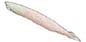
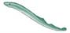
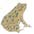
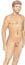
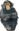
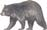
496 Capítulo 23
común es el principio de parsimonia : eligen la explicación más simple para interpretar los datos. La parsimonia, un principio guía en muchas áreas de investigación, se basa en la experiencia de que la explicación más simple probablemente sea la correcta. Aplicada a la elección de cladogramas, la parsimonia requiere que el cladograma con el menor número de cambios en caracteres (el que tiene menos homoplasias) se acepta como el más probable ( FIGURA 23-11 ). En la práctica real con frecuencia es
mediante distancias relativas desde la base del diagrama. Mientras más lejos se ubique un nodo de la base del cladograma, más recientemente divergió el grupo. En el ejemplo, el nodo G representa la divergencia más reciente y el nodo A representa la divergencia más antigua. Por ende, en el ejemplo, los humanos están cercanamente emparentados con los chimpancés (a través del nodo G), pero más distantemente emparentados con los osos (a través del nodo F). Por tanto, los biólogos clásicos asignan humanos y chimpancés a un taxón menos incluyente (orden Primates), mientras que humanos, chimpancés y osos se asignan a un taxón más ancho y más incluyente (clase Mammalia). Además, el cladograma revela que las lagartijas están más cercanamente emparentadas con el clado mamíferos que con ranas, peces luna o cualquier otro clado. ¿Puede explicar por qué? Dos conceptos importantes guían la interpretación de los cladogramas. Primero, las relaciones entre taxones sólo están determinadas al rastrear a lo largo de las ramas de regreso hacia el ancestro común más reciente y no por la colocación relativa de las ramas a lo largo del eje horizontal. Es posible representar las mismas relaciones con muchos tipos diferentes de diagramas de ramifi cación ( FIGURA 23-10 ). Observe que los tres cladogramas en esta fi gura son equivalentes. (Verifi que esto al comparar los nodos y al comprobar las relaciones descritas antes). En consecuencia, un árbol puede girarse alrededor de sus nodos. Las relaciones de ramifi cación son importantes, no el orden de los taxones o el tamaño de las ramas. Un segundo concepto importante es que el cladograma indica cuáles taxones comparten un ancestro común y cuán recientemente lo compartieron. El ancestro mismo permanece sin especifi car. El cladograma no establece relaciones directas ancestro-descendiente entre taxones. En otras palabras: un cladograma no sugiere que un taxón dio origen a algún otro taxón.
Los sistemáticos usan los principios de parsimonia y máxima probabilidad para tomar decisiones
Cuando los sistemáticos consideran las relaciones evolutivas de los organismos, deben elegir entre múltiples cladogramas en competencia. ¿Cómo eligen el patrón de ramifi cación más preciso? El criterio más
Ausente Ausente Presente
Pulgar oponible
- Este cladograma, con el estilo usado en este libro, tiene ramas diagonales (b) Ésta es otra forma de presentar las mismas relaciones mostradas en (a).
Ancestro vertebrado común
Ancestro vertebrado con mandíbulas común
Ancestro tetrápodo común
Ancestro amniota común
Ancestro mamífero común
Ancestro primate común
Nodo A
Anfioxo
Lamprea
Pez luna
Rana
Lagartija
Oso
Chimpancé
Humano
Nodo B
Nodo C
Nodo D
Nodo E
Nodo F
G
Nodo A
Nodo C
Nodo E
Nodo B
Nodo D
Nodo F
Anfioxo
Pez luna
Lagartija
Chimpancé
Humano
Oso
Rana
Lamprea
Ancestro cordado común Ancestro cordado común
Ausente Presente
Nodo
Pulgar oponible
Nodo G
Ausente Presente
Pulgar oponible
Vértebras
Mandíbulas
Tetrápodo
Huevo amniótico
Glándulas mamarias
Pulgar oponible
Postura erguida
Anfioxo (grupo externo)
Lamprea
Pez luna
Rana
Lagartija
Oso
Chimpancé
Humano
Ancestro cordado común
- Este cladograma tiene ramas rectangulares y está girado 90 grados. Sin embargo, ilustra las mismas relaciones que los cladogramas en (a) y (b).
FIGURA 23-10 Estilos de cladogramas Estos tres cladogramas se ven muy diferentes, pero muestran las mismas relaciones. Recuerde que las relaciones se representan por cuáles grupos se ramifi can en los nodos. La longitud de las ramas no es importante.
Comprensión de la diversidad: sistemática 497
mas taxonómicos. Los sistemáticos ofrecen herramientas para ayudar en la puesta a prueba de estas hipótesis. En los capítulos 24 a 32 se explorarán muchos acertijos evolutivos y se estudiarán las hipótesis actuales acerca de las relaciones y clasifi caciones de los organismos.
Repaso
■ ¿En qué forma los cladistas usan en su trabajo los caracteres derivados compartidos?
■ ¿Qué es el análisis de grupos externos?
■ ¿Cómo aplican los sistemáticos el principio de parsimonia?
posible generar varios cladogramas que son igualmente parsimoniosos. Las opciones excluidas son aquellas con más homoplasias, porque los caracteres derivados compartidos son más probables que las homoplasias. Los sistemáticos también usan la máxima probabilidad para tomar decisiones, en especial cuando analizan datos moleculares. La máxima probabilidad es un método estadístico que depende de la probabilidad; por ejemplo, la probabilidad de que las secuencias de nucleótidos en el ADN y ARN cambie a una tasa constante con el paso del tiempo. Complejos programas de computadora analizan grandes conjuntos de datos y reportan la probabilidad de un árbol particular. Todavía permanecen muchas preguntas evolutivas. Nuevas hipótesis acerca de cómo se relacionan los organismos sugieren nuevos esque-
MÉTODO DE INVESTIGACIÓN Aplicación del principio de parsimonia a la construcción de un cladograma
La construcción de cladogramas se usa para elegir entre hipótesis alternativas de relaciones evolutivas al seleccionar el patrón de ramifi cación más preciso.
- Hipótesis 2: delfines y mamíferos terrestres son parientes cercanos. (a) Hipótesis 1: delfines y peces óseos son parientes cercanos.
Peces óseos
Tiburones
Peces sin mandíbulas
Anfibios
Delfines
Mamíferos terrestres
Reptiles
C BA C BA
Peces óseos
Tiburones
Peces sin mandíbulas
Anfibios
Delfines
Mamiferos terrestres
Reptiles
Ancestro común Ancestro común
C BA
Los sistemáticos eligen la explicación más simple para interpretar los datos. 1 Dibujar los posibles cladogramas. 2 Examinar los caracteres relevantes. En este ejemplo, carácter A = pelo; B = glándulas mamarias; C = huesos del oído medio. 3 Observe que en el primer cladograma (hipótesis 1), los tres caracteres examinados tuvieron que evolucionar de manera independiente dos veces. 4 Se elige la hipótesis 2 porque requiere que cada carácter evolucione sólo una vez.
FIGURA 23-11 Los biólogos usan el principio de parsimonia para elegir entre hipótesis alternativas de relaciones evolutivas
¿Por qué se utiliza?
¿Cómo se hace esto?
■ ■ RESUMEN: ENFOQUE EN LOS OBJETIVOS DE APRENDIZAJE
23.1 ( página 482 )
1 Formular dos justifi caciones para el uso de los nombres y clasifi caciones científi cos de los organismos.
■ La sistemática es el estudio científi co de la diversidad de los organismos y sus relaciones evolutivas. La taxonomía es la rama de la sistemática dedicada a nombrar, describir y clasifi car organismos.
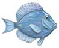
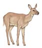
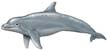
498 Capítulo 23
compartieron un ancestro común reciente y cuándo compartieron dicho ancestro en comparación con otros grupos.
23.3 ( página 488 )
5 Revisar de manera crítica las difi cultades que se encuentran al elegir criterios taxonómicos.
■ Los sistemáticos buscan determinar relaciones evolutivas, o fi logenia , con base en características compartidas. La homología , la presencia en dos o más especies de un rasgo derivado a partir de un ancestro común reciente, implica evolución a partir de un ancestro común.
■ Algunos caracteres aparentemente homólogos se adquieren de manera independiente mediante evolución convergente , la evolución independiente de estructuras similares en organismos distantemente relacionados, o por reversión , la inversión de un rasgo a su estado ancestral. El término homoplasia se refi ere a caracteres superfi cialmente similares que no son homólogos. 6 Aplicar el concepto de caracteres derivados compartidos en la clasifi cación de organismos.
■ Los caracteres ancestrales compartidos (plesiomorfi as) sugieren un ancestro común distante.
■ Los caracteres derivados compartidos (sinapomorfi as) indican un ancestro común más reciente y pueden usarse como criterios taxonómicos. 7 Describir cómo los análisis de homologías moleculares contribuyen a la ciencia de la sistemática.
■ La sistemática molecular depende de la estructura molecular para aclarar la fi logenia. Las comparaciones de secuencias de nucleótidos en ADN y ARN, y de secuencias de aminoácidos en proteínas, proporcionan importante información acerca de cuán cercanamente emparentados están los organismos. 8 Contrastar los taxones monofi lético, parafi lético y polifi lético.
1 2 3 4 5 6
Ancestro común de los grupos 4, 5 y 6
A
B
D
E C
■ Un grupo monofi lético , o clado, incluye a todos los descendientes del ancestro común más reciente.
■ Un grupo parafi lético consiste de un ancestro común y de algunos de sus descendientes, mas no todos.
■ Un grupo polifi lético consiste de organismos que evolucionaron a partir de diferentes ancestros recientes.
23.4 ( página 493 )
9 Contrastar la clasifi cación de reptiles y aves entre un sistemático cladista y uno evolutivo.
■ Los científi cos que aplican los principios de la cladística insisten en que cada taxón es monofi lético. Cada grupo monofi lético consiste de un ancestro común y de todos sus descendientes. Los cladistas usan caracteres derivados compartidos para determinar dichas relaciones. Los cladistas clasifi can reptiles y aves en un solo clado.
■ Los biólogos que usan un enfoque sistemático evolutivo clasifi can reptiles y aves en clases separadas aun cuando dichas clases son grupos parafi léticos. La sistemática evolutiva se basa en caracteres ancestrales compartidos así como en caracteres derivados compartidos. 10 Describir la construcción de un cladograma con el uso de análisis de grupos externos.
■ Los cladistas usan caracteres derivados compartidos para reconstruir relaciones evolutivas y diagraman dichas relaciones en cladogramas. Usan
Clasifi cación es el proceso de ordenar los organismos en grupos con base en semejanzas que refl ejen relaciones evolutivas.
■ Los nombres científi cos permiten a los biólogos de diferentes países con distintos idiomas comunicarse acerca de los organismos. Los biólogos en ubicaciones distantes deben saber con certeza que estudian los mismos (o diferentes) organismos.
■ La clasifi cación ayuda a los biólogos a organizar su conocimiento. 2 Describir el sistema binomial de nomenclatura de organismos y ordenar las categorías de Linneo en forma jerárquica, de la más incluyente a la menos incluyente.
■ En el sistema binomial de nomenclatura la unidad básica de clasifi cación es la especie .
■ El nombre de cada especie tiene dos partes: el nombre del género seguido por el epíteto específi co .
■ El sistema jerárquico de clasifi cación incluye dominio , reino , fi lo , clase , orden , familia , género y especie . Cada agrupamiento formal en algún nivel dado es un taxón .
23.2 ( página 483 )
3 Describir los tres dominios y argumentar a favor y en contra de clasifi car a los organismos en los dominios. (Comparar este enfoque con el uso de reinos como la principal categoría de clasifi cación.)
■ El sistema de clasifi cación de tres dominios asigna los organismos a los dominios Archaea , Bacteria o Eukarya . La clasifi cación de dominio se basa en datos moleculares.
■ El dominio Eukarya incluye hongos, plantas, animales y protistas.
■ Algunos sistemáticos reconocen los reinos Archaea , Bacteria , Fungi , Plantae y Animalia . Muchos “supergrupos” compuestos principalmente de organismos eucariontes acuáticos unicelulares antes se clasifi caron como reino Protista. Los miembros de Archaea y Bacteria son procariotas. Los hongos, que incluyen mohos, levaduras y setas, absorben nutrientes producidos por otros organismos. Los reinos Plantae y Animalia consisten de eucariotas multicelulares. Para características adicionales de los reinos, consulte la tabla 23-2. Conforme nuevos datos se interpretan, con frecuencia deben reclasifi carse los organismos asignados a estos reinos.
Explore el árbol de la vida al hacer clic sobre las fi guras en CengageNOW.
4 Interpretar un cladograma, y describir el signifi cado de sus nodos y ramas específi cos.
■ En un cladograma , cada rama representa un clado , un grupo de organismos con un ancestro común. Cada nodo , o punto de ramifi cación, representa la división de dos o más nuevos grupos a partir de un ancestro común. El nodo representa el ancestro común más reciente del clado simbolizado por las ramas. La raíz representa el ancestro común más reciente de todos los clados mostrados en el árbol.
■ Es posible determinar las relaciones entre taxones al rastrear a lo largo de las ramas de regreso hacia los nodos. El cladograma indica cuáles taxones
Comprensión de la diversidad: sistemática 499
■ Al usar el principio de parsimonia , los cladistas eligen la explicación más simple para interpretar los datos.
Aprenda más acerca de la interpretación y la construcción de cladogramas al hacer clic sobre las fi guras en CengageNOW.
análisis de grupos externos para determinar cuáles caracteres en un grupo dado de taxones son ancestrales y cuáles son derivados.
■ Un grupo externo es un taxón que divergió más temprano que cualquiera de los otros taxones por investigar. 11 Aplicar el principio de parsimonia a la construcción de cladogramas.
EVALÚE SU COMPRENSIÓN
La ciencia de describir, nombrar y clasifi car organismos es (a) sistemática (b) taxonomía (c) cladística (sistemática fi logenética) (d) fenética (e) sistemática evolutiva
El moho que produce penicilina es Penicillium notatum . Penicillium es el nombre de su (a) género (b) orden (c) familia (d) especie (e) epíteto específi co
Los desintegradores, como los mohos y las setas, ¿a cuáles dominio y reino pertenecen? (a) Eukarya, Plantae (b) Bacteria, Archaea (c) Archaea, Fungi (d) Eukarya, Archaea (e) Eukarya, Fungi
Cada punto de ramifi cación en un cladograma (a) se llama raíz (b) representa un clado (c) representa la divergencia de dos o más grupos a partir de un ancestro común (d) representa transferencia genética horizontal (e) marca la divergencia de dos reinos
La presencia de estructuras homólogas en dos grupos diferentes de organismos sugiere que (a) los organismos evolucionaron a partir de un ancestro común (b) ocurrió evolución convergente (c) pertenecen a un grupo polifi lético (d) ocurrió homoplasia (e) los caracteres adquiridos de manera independiente pudieron evolucionar cuando los organismos habitaban ambientes similares
El delfín y el humano tienen la habilidad de nutrir a sus crías, mientras que el pez menos cercanamente emparentado no la tiene. La capacidad para nutrir a sus crías es (a) un carácter derivado compartido de los mamíferos (b) un carácter ancestral compartido de todos los vertebrados (c) un carácter derivado compartido de peces y mamíferos (d) un comportamiento homólogo (e) una homoplasia
El uso de regiones específi cas del ADN como un código de barras molecular (a) sólo es efectivo con bacterias (b) es posible debido a semejanzas en los azúcares (c) podría causar grandes errores al distinguir entre especies cercanamente emparentadas (d) es una forma
efectiva para identifi car transferencia genética vertical (e) podría ayudar a los taxonomistas a identifi car y describir nuevas especies
Un grupo de organismos que incluye un ancestro común reciente y todos sus descendientes es (a) polifi lético (b) parafi lético (c) monofi lético (d) un ejemplo de transferencia genética horizontal (e) un grupo hermano
Algunos sistemáticos clasifi can a cocodrilos y aves en el mismo taxón porque están contenidos dentro de un grupo monofi lético. ¿Qué enfoque siguen estos sistemáticos? (a) fi lético (b) cladístico (c) sistemático evolutivo (d) polifi lético (e) tanto cladístico como sistemático evolutivo
En el análisis cladístico (a) los caracteres ancestrales se usan para reconstruir fi logenias (b) los caracteres deben ser homoplásticos (c) se prefi eren los grupos polifi léticos (d) rara vez se utiliza el méto do llamado de máxima probabilidad (e) se usa el análisis de grupos externos para determinar un taxón que divergió más temprano que los otros taxones motivo de estudio
Al interpretar un cladograma (a) es posible identifi car al ancestro de cada grupo al rastrear cada rama de regreso hacia el nodo más cercano a la raíz (b) es posible identifi car los taxones a los que dio origen cada grupo (c) debe estudiarse la colocación relativa de las ramas más pequeñas a lo largo del eje principal del árbol (d) es posible determinar las relaciones al rastrear a lo largo de las ramas de regreso al ancestro común más reciente (e) debe identifi carse la transferencia genética horizontal
Cuando los cladistas aplican el principio de parsimonia (a) eligen el cladograma que requiere menos cambios en los caracteres como la explicación más probable para interpretar los datos (b) seleccionan múltiples hipótesis para explicar cada relación (c) no usan grupos externos (d) por lo general usan un enfoque polifi lético (e) plantean la hipótesis de que la explicación más compleja probablemente es la más correcta
PENSAMIENTO CRÍTICO
¿Cuáles son las ventajas de PhyloCode? ¿Y de los organismos que sirven como código de barras?
¿Cuáles son algunos de los criterios/herramientas que pueden usar los biólogos para asignar los protistas a grupos monofi léticos?
VÍNCULO CON LA EVOLUCIÓN. Explique por qué la evolución no siempre es lineal.
VÍNCULO CON LA EVOLUCIÓN. ¿Los miembros de un clado son similares porque comparten un ancestro común o pertenecen al mismo clado porque son similares? ¿Cómo podría variar su respuesta dependiendo de cuál enfoque a la sistemática aplique?
VÍNCULO CON LA EVOLUCIÓN. Se considera que la proteína de unión a TATA (TBP) es necesaria para la transcripción en todos los núcleos de las células eucariotas. Estudios demuestran que las ar-
queas, mas no las bacterias, tienen una proteína estructural y funcionalmente similar a la TBP. ¿Qué sugiere esta similitud en cuanto a la evolución de arqueas, bacterias y eucariotas? ¿Cómo el conocimiento de esta semejanza puede afectar la manera en que la sistemática clasifi ca estos organismos?
- ANÁLISIS DE DATOS. Construya un cladograma con base en los siguientes datos. Los musgos son plantas sin tejido vascular. Colas de caballo, helechos, gimnospermas (pinos y otras plantas con semillas desnudas) y angiospermas (plantas con fl ores) son todas plantas vasculares. Las semillas están ausentes en todas, excepto en las gimnospermas y angiospermas. Las angiospermas son las únicas plantas de semilla con fl ores. ( Sugerencia: para auxiliarse en la construcción del cladograma, dibuje una tabla simple que muestre cuáles caracteres están presentes en cada grupo. Consulte la fi gura 23-9).
500 Capítulo 23
- CIENCIA, TECNOLOGÍA Y SOCIEDAD. Una enfermera y dos pacientes en el mismo hospital mueren por una infección bacterial desconocida que no responde a la penicilina. ¿Cómo procedería para determinar la fi logenia de esta bacteria? (Considere las estrategias que aprendió en este capítulo). ¿Cómo podría ser útil en esta situación el conocimiento de su fi logenia?
Preguntas adicionales están disponibles en CengageNOW en www.cengage.com/login.
- ANÁLISIS DE DATOS. En la ilustración, ¿qué tipo de grupo representa el área entre corchetes? ¿Qué tipo de grupo está formado por 2 y 3? ¿Qué tipo de grupo está formado por 2, 4 y 6?
1 2 3 4 5 6
Taxón